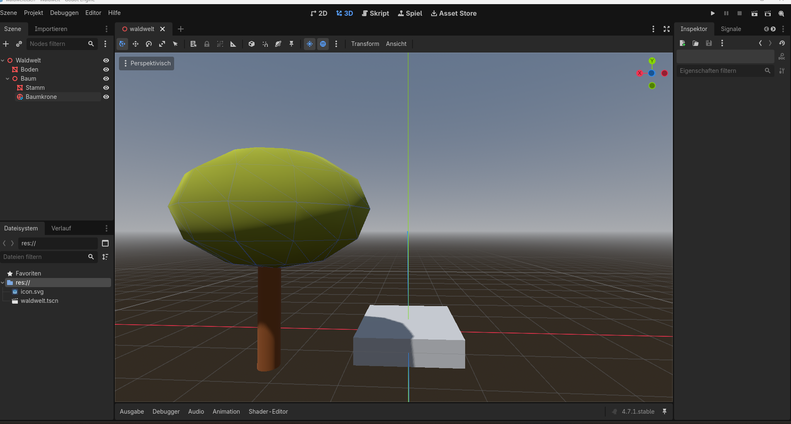
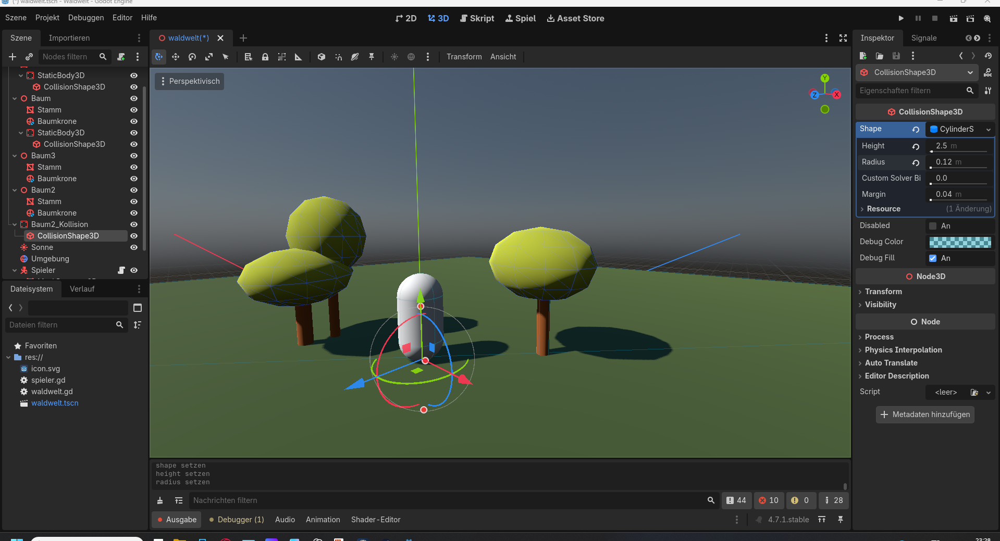

Vom leeren Projekt zur ersten Waldwelt
Wie aus einer einfachen Godot-Testszene nach und nach die Grundlage für Gege's Little Adventures entstand.
Der Anfang von Gege's Little Adventures
Am Anfang stand noch keine große Spielwelt, keine Burg und auch kein fertiger Held. Das Projekt begann mit den grundlegenden Bausteinen: einer Spielfigur, einer Kamera, einem Boden und der Frage, wie aus diesen wenigen Elementen nach und nach ein richtiges Spiel entstehen kann.
Die ersten Tage bestanden deshalb vor allem daraus, die Grundlagen in Godot aufzubauen und gleichzeitig sehr viel auszuprobieren und zu lernen.
Die ersten Systeme
Schritt für Schritt kamen immer mehr Funktionen hinzu. Die ersten wichtigen Systeme waren:
- eine begehbare 3D-Welt
- Spielersteuerung und Kamera
- ein HUD für Münzen und Rohstoffe
- ein Inventar
- sammelbare Bäume, Steine und weitere Rohstoffe
- Respawn der Ressourcen
- erste Vegetation und ein See
- Interaktionen innerhalb der Spielwelt
Damit entstand zum ersten Mal das Gefühl, dass aus dem Projekt tatsächlich eine eigene kleine Spielwelt werden könnte.
Die ersten sichtbaren Fortschritte
Schon innerhalb der ersten Entwicklungsphase wurde aus einer sehr einfachen Testszene langsam eine kleine begehbare Spielwelt.


Nicht alles funktionierte sofort
Gerade am Anfang gab es viele kleine Probleme. Kollisionen funktionierten nicht immer wie erwartet, Objekte mussten neu positioniert werden und manche Systeme wurden mehrfach verändert.
Genau diese Probleme gehören jedoch zur Entwicklung dazu. Mit jedem gelösten Fehler wurde das Projekt ein Stück strukturierter und verständlicher.
Der erste große Fortschritt
Ein wichtiger Moment war erreicht, als Rohstoffe nicht mehr nur eingesammelt werden konnten, sondern nach einer gewissen Zeit wieder in der Welt erschienen.
Die Welt war dadurch nicht mehr nur eine statische Testszene. Kurz darauf entstanden die ersten Ideen für Quests, Crafting, neue Materialien und weitere Regionen.
Crafting, Bauen und die eigene Basis
Ein besonders wichtiger Schwerpunkt von Gege's Little Adventures soll das Crafting- und Bausystem werden.
Spieler sollen Rohstoffe nicht einfach nur sammeln. Die Materialien sollen die Grundlage für zahlreiche herstellbare Gegenstände bilden – darunter Werkzeuge, Waffen, Ausrüstung, Möbel, Dekorationen und viele weitere nutzbare Items.
Auch der eigene Hausbau soll sich mit dem Spielfortschritt entwickeln. Zu Beginn sollen beispielsweise einfache Gebäude aus Holz möglich sein. Später folgen stabilere Konstruktionen aus Stein und weitere Baustufen mit unterschiedlichen Erzen und Materialien.
Dadurch soll sich auch die eigene Basis sichtbar weiterentwickeln. Wer neue Gebiete erkundet und bessere Rohstoffe findet, erhält gleichzeitig neue Möglichkeiten zum Bauen, Herstellen und Dekorieren.
Was daraus werden soll
Gege's Little Adventures soll eine Fantasy-Welt werden, in der Gege unterschiedliche Regionen erkundet, Ressourcen sammelt, Quests erfüllt, neue Ausrüstung erhält und immer weitere Möglichkeiten freischaltet.
Das Zusammenspiel aus Erkunden, Sammeln, Crafting, Bauen, Verbessern und Dekorieren soll dabei einen wichtigen Teil des Spiels ausmachen.
Die Welt ist noch lange nicht fertig – aber genau deshalb gibt es dieses Entwicklungstagebuch.